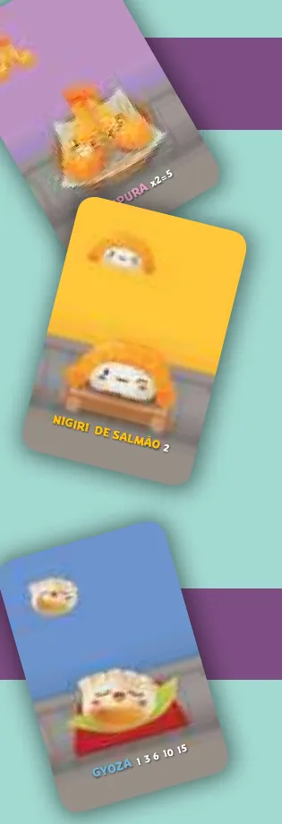
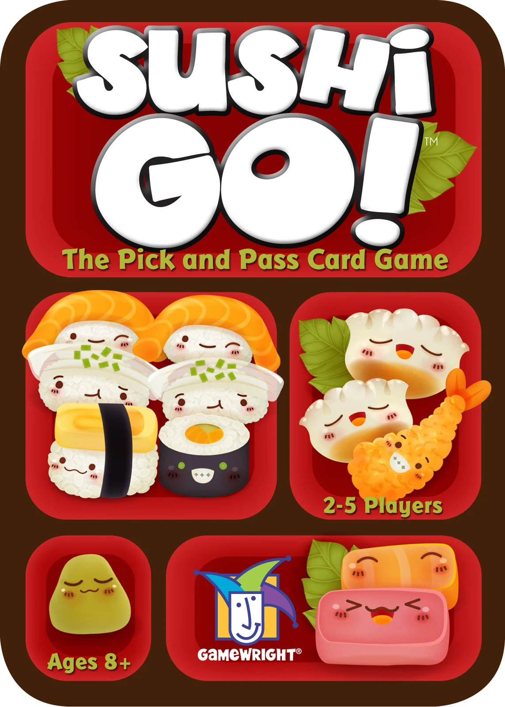
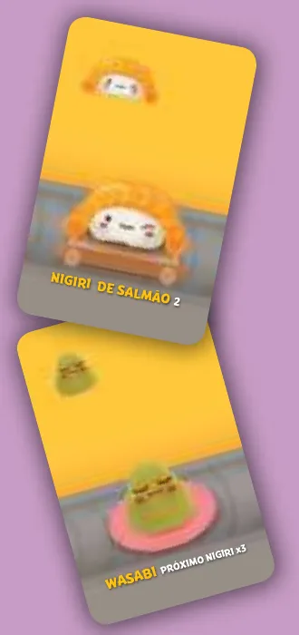
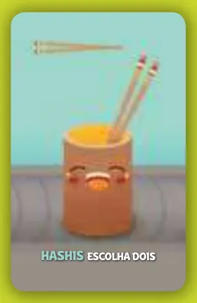
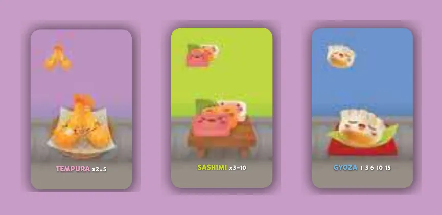
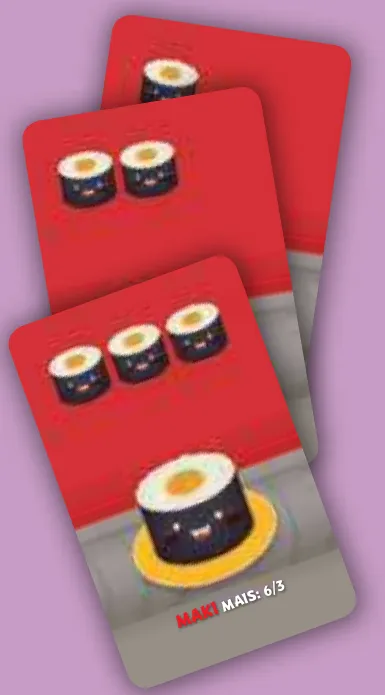
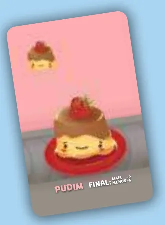

Para quem nunca jogou2 a 5 jogadores15 min8+Edição Devir
· Redação Elite Boardgamers
Resumo em 1 minuto
Em cada turno você fica com uma carta da mão e passa o resto para a esquerda; depois de três rodadas, vence quem somar mais pontos com os pratos e os pudins.
Todos escolhem uma carta ao mesmo tempo, revelam juntos e passam o resto da mão para o jogador da esquerda.
Tempurá vale em pares, sashimi em trios, gyoza cresce a cada carta; o wasabi triplica o próximo nigiri e o maki é disputado com a mesa.
Os pudins ficam guardados até o fim: quem tem mais ganha 6 pontos e quem tem menos perde 6.
Como você aprende: 3 etapas, da mesa montada à contagem de pontosLeitura do essencial: cerca de 5 min
À vista, só o essencial para jogar. O que abre com + é explicação, exemplo, exercício ou regra de caso especial: abra quando precisar.
Montar a mesa passo a passo
A montagem segue a "Preparação" do manual p. 2, na mesma ordem, com cada ação num passo. Sushi Go! não tem tabuleiro: tudo o que vai à mesa são as cartas, papel e caneta.
Componentes da caixap. 2
Carta
Quantidade
Para que serve
Tempurá
14
Em pares: cada par vale 5 pontos
Sashimi
14
Em trios: cada trio vale 10 pontos
Gyoza
14
Quanto mais, mais pontos, até 15
Maki (2), maki (3) e maki (1)
12, 8 e 6
Os símbolos de maki disputam 6 e 3 pontos; o número entre parênteses é a quantidade de símbolos de maki da carta
Nigiri de salmão, de lula e de ovo
10, 5 e 5
Valem 2, 3 e 1 ponto
Wasabi
6
Triplica o próximo nigiri
Hashis
4
Permitem baixar 2 cartas num turno futuro
Pudim
10
Só contam no fim do jogo
São 108 cartas ao todo p. 2, mais o manual, segundo a página do produto na Devir. Papel e caneta não vêm na caixa: o manual pede que os jogadores os providenciem p. 2.
Algumas cartas da caixa, em foto da editora original: tempurá, wasabi, hashis, sashimi e pudim, ao lado da lata do jogo. É a edição em inglês; os nomes e o texto das cartas da caixa brasileira estão em português. Imagem: Gamewright
Os passosp. 2
1. Embaralhar. Junte as 108 cartas num só monte e embaralhe bem p. 2. Não há baralhos separados por tipo: todas as comidas vão juntas.

Três cartas como aparecem na página de preparação do manual: tempurá, nigiri de salmão e gyoza. Cada carta mostra no rodapé o nome e um lembrete da pontuação. Ilustração: manual Devir p. 2
2. Dar as cartas. Dê a cada jogador o número de cartas da tabela abaixo: 10 com 2 jogadores, 9 com 3, 8 com 4 e 7 com 5 p. 2.
3. Mão escondida. Cada jogador segura as suas cartas na mão, sem deixar os outros verem p. 2.
4. Pilha de compra. O resto das cartas fica numa pilha virada para baixo, no centro da mesa p. 2. Ela só volta a ser usada no começo da rodada seguinte, para dar as novas mãos p. 7.
5. Placar. Separe papel e caneta e escolham um jogador para anotar a pontuação p. 2.
O manual não ilustra a mesa montada: a página de preparação mostra só as cartas soltas da figura acima.
O que muda com o número de jogadores (p. 2; contas do guia nas três últimas colunas)
Jogadores
Cartas na mão de cada um
Turnos por rodada
Cartas na pilha de compra depois de dar
Cartas usadas nas 3 rodadas
2
10
10
88
60
3
9
9
81
81
4
8
8
76
96
5
7
7
73
105
O que volta para a caixa. Nada. Todas as 108 cartas são embaralhadas juntas; as que nunca saem da pilha de compra são ignoradas no fim do jogo p. 8.
Quem começa. Ninguém. Em cada turno, todos escolhem a sua carta ao mesmo tempo p. 3. O que existe é um jogador escolhido para anotar o placar p. 2.
Antes de começar, confira: as 108 cartas embaralhadas juntas; cada jogador com a quantidade da tabela, na mão e escondida; o resto numa pilha virada para baixo no centro; papel, caneta e alguém para anotar.
Partida de 4 jogadores. Quantas cartas cada um recebe?
Com 4 jogadores, 8 cartas para cada um; com 2, 10; com 3, 9; com 5, 7 p. 2.
Comece a jogar em 4 minutos

Imagem: Gamewright
Meta: em 4 minutos de leitura, montar a mesa e jogar o primeiro turno sem abrir o manual.
A ideia do jogo
Você recebe uma mão de cartas de comida. Em cada turno, fica com uma carta, baixa essa carta na sua frente, virada para baixo, e passa o resto da mão para o jogador da esquerda. Depois de três rodadas, quem tiver mais pontos vence: cada comida pontua de um jeito, e muitas só valem em grupo (p. 3 a 9).
Monte a mesa
Resumo da seção "Montar a mesa passo a passo", acima p. 2.
Embaralhe as 108 cartas juntas.
Dê 10 cartas a cada um com 2 jogadores, 9 com 3, 8 com 4 e 7 com 5. Cada um segura a sua mão escondida.
O resto vira uma pilha de compra, virada para baixo, no centro.
Papel e caneta; alguém anota o placar.
Seu primeiro turno
Um turno acontece assim, e todos o fazem ao mesmo tempo p. 3:
Escolher. Cada jogador escolhe 1 carta da própria mão e a põe na sua frente, virada para baixo.
Revelar. Quando todos escolheram, todos viram a carta escolhida para cima, juntos.
Passar. Cada um passa as cartas que sobraram na mão, viradas para baixo, para o jogador da esquerda, e pega as que recebeu da direita. Começa o turno seguinte, com uma carta a menos na mão.
As cartas baixadas ficam viradas para cima na sua frente até o fim da rodada, quando são pontuadas. O manual sugere agrupar as do mesmo tipo p. 3.
No primeiro turno, duas cartas pedem atenção, mas só fazem efeito depois: wasabi triplica o próximo nigiri que você baixar p. 3, e hashis deixa você baixar 2 cartas num turno futuro p. 4. As duas estão na etapa 1.
Ainda não precisa saber
Onde vai o nigiri quando você tem wasabi, como usar os hashis e o que acontece no último turno: etapa 1. Quanto vale cada comida: etapa 2. Começar uma nova rodada, os pudins e quem vence: etapa 3.
Como a partida acaba: três rodadas e a sobremesa
Cada rodada termina quando a última carta das mãos é baixada; aí todos pontuam o que está na frente p. 4. Depois da terceira rodada, os pudins contam pontos, e quem tiver mais pontos vence p. 8 e 9.
Prefere ver? O vídeo de regras rápidas é do canal da própria Devir. Ele complementa este guia; em caso de diferença, vale o manual.
DEVIR BRASIL I Sushi Go! - regras rápidas, canal Devir TV Brasil · abrir no YouTube
0Antes de tudo: o que é este jogoOpcional
Imagem: GamewrightAbrir esta seção
Sushi Go! é um jogo de cartas de Paul Walker-Harding, com ilustrações de Nan Rangsima, para 2 a 5 jogadores a partir de 8 anos, com partidas de cerca de 15 minutos, segundo a página do produto na Devir. Autor, ilustrador e distribuidora brasileira estão no manual p. 11.
São três rodadas de escolher uma carta e passar o resto da mão adiante. A decisão de cada turno tem dois lados: o que você quer para fechar os seus grupos de comida e o que você deixa na mão que vai para o vizinho p. 3.
Este guia é do jogo base; o Sushi Go Party! é outro jogo, com outras regras.
1Como este guia ensinaOpcional
Imagem: GamewrightAbrir esta seção
Três etapas, na ordem em que você precisa delas: escolher e passar (com wasabi e hashis); pontuar uma rodada; três rodadas, pudins e o vencedor. Cada etapa tem Para entender, Passo a passo, regras de caso especial à parte e tarefas com ajuda decrescente: exemplo resolvido, complete e sua vez. Toque numa opção para ver a certa e a explicação. No fim, uma avaliação diz o que reler, e a folha de consulta vai para a mesa.
2Etapa 1: escolher, revelar e passar
Por que funciona assimRegra adicional: Wasabi

O nigiri de salmão e o wasabi, como aparecem no manual. O lembrete do wasabi diz "próximo nigiri x3": vale para o nigiri que chega depois dele. Ilustração: manual Devir p. 7Regra adicional: Hashis

A carta de hashis, com o lembrete "escolha dois". Ilustração: manual Devir p. 4Ver um exemplo resolvidoPratique esta etapa: exercícios com respostas
3Etapa 2: pontuar uma rodada
Por que funciona assim

Tempurá, sashimi e gyoza, com o lembrete da pontuação no rodapé de cada carta: "x2=5", "x3=10" e "1 3 6 10 15". Ilustração: manual Devir p. 6Regra adicional: Empate no makiSobre a edição: Maki com poucos símbolos

Cartas de maki com 1, 2 e 3 símbolos no topo; o que conta é a soma dos símbolos, não o número de cartas. Ilustração: manual Devir p. 5Ver um exemplo resolvidoPratique esta etapa: exercícios com respostas
4Etapa 3: três rodadas, pudins e o vencedor
Por que funciona assim

A carta de pudim, com o lembrete "final: mais +6, menos -6". Ilustração: manual Devir p. 8Regra adicional: Empate nos pudinsRegra adicional: Ninguém com pudimRegra adicional: Pudim com 2 jogadoresSobre a edição: Todos empatados nos pudinsSobre a edição: Empate que os pudins não desfazemVer um exemplo resolvidoVer um exemplo resolvidoPratique esta etapa: exercícios com respostas
5Situações especiaisOpcional
Imagem: GamewrightAbrir esta seçãoRegra adicional: Variante: passar para os dois ladosRegra adicional: Variante de 2 jogadores, com jogador fictícioSobre a edição: Na variante, as cartas do fictícioSobre a edição: Hashis e wasabi no mesmo turno
6Avaliação finalOpcional
Imagem: GamewrightAbrir esta seção
Responda sem consultar. Cada resposta diz o que reler.
1. Partida de 5 jogadores. Quantas cartas cada um recebe em cada rodada?
Com 5 jogadores, 7 cartas p. 2. Releia a montagem.
2. Quando você revela a carta escolhida?
Todos escolhem virado para baixo e revelam juntos p. 3. Releia a etapa 1.
3. Você baixou um nigiri de lula no turno 2 e um wasabi no turno 3. Quanto vale a lula?
O wasabi triplica o nigiri baixado depois dele; a lula veio antes p. 3 e 7. Releia a etapa 1.
4. Você tem 3 tempurás e 4 gyozas. Quantos pontos fazem juntos?
Um par de tempurá, 5 (a terceira não vale); 4 gyozas, 10 p. 6. Releia a etapa 2.
5. Carla tem 6 símbolos de maki, e Ana e Bruno têm 4 cada. Quanto faz Ana?
Ana e Bruno empatam em segundo e dividem 3; o ponto que sobra é perdido p. 5. Releia a etapa 2.
6. Partida de 3 jogadores. Ana tem 2 pudins, Bruno 2 e Carla nenhum. O que acontece?
Empate com mais pudins divide os 6 pontos; quem tem menos, mesmo sem nenhum, perde 6 p. 8. Releia a etapa 3.
7Para consultar durante a partida
Imagem: Gamewright
Preparação: 108 cartas embaralhadas juntas; 10 cartas cada com 2 jogadores, 9 com 3, 8 com 4, 7 com 5; resto em pilha virada para baixo; papel e caneta.
Um turno
Todos escolhem 1 carta, virada para baixo.
Todos revelam juntos.
Nigiri com wasabi livre na frente: vai sobre o wasabi.
Passe o resto da mão para a esquerda.
Hashis: já na sua frente, diga "Sushi Go!" e baixe uma segunda carta antes da revelação; depois, a carta de hashis volta para a mão e é passada. Um por turno.
Fim da rodada: a última carta é baixada direto; todos pontuam.
Comida
Pontos
Tempurá
5 por par
Sashimi
10 por trio
Gyoza
1, 3, 6, 10, 15 (5 ou mais)
Nigiri
lula 3, salmão 2, ovo 1; triplo sobre wasabi
Maki
mais símbolos 6, segundo 3; empate divide, sobra perdida
Wasabi sem nigiri, hashis
0
Pudim
no fim do jogo: mais +6, menos -6 (com 2 jogadores, só +6)
Nova rodada: anote os pontos; descarte tudo menos os pudins; nova mão do mesmo tamanho.
Fim do jogo: depois da terceira rodada, pontue os pudins. Vence quem tem mais pontos; empate, quem tem mais pudins.
Devir. Página do produto Sushi Go! (jogadores, idade e duração), mesmo endereço, consultada em 06/11/2026.
Regras conferidas no manual da edição brasileira de Sushi Go! (Devir, tradução da Equipe Devir, a partir do jogo da Gamewright de 2014), baixado da página do produto no site da Devir. É o jogo base de cartas, não o Sushi Go Party! O PDF tem 12 páginas sem número impresso: o guia conta a capa como p. 1.